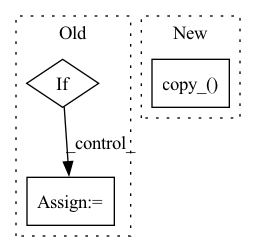

Pattern ID :19799
Before Change
def update(self, iter=None):
cur_nimg = self.batch_size * self.d_updates_per_step * iter
if self.ema_rampup is not None:
ema_nimg = min(self.ema_nimg, cur_nimg * self.ema_rampup)
ema_beta = 0.5 ** (self.batch_size / max(ema_nimg, 1e-8))
for p_ema, p in zip(self.target.parameters(), self.source.parameters()):
p_ema.copy_(p.lerp(p_ema, ema_beta))After Change
with torch.no_grad():
for key in self.source_dict:
self.target_dict[key].data.copy_( self.target_dict[key].data*decay + \
self.source_dict[key].data*(1. - decay))
class Ema_stylegan(object):
def __init__(self, source, target, ema_kimg, ema_rampup, effective_batch_size, d_updates_per_step):In pattern: SUPERPATTERN
Frequency: 3
Non-data size: 3
Instances Fragment ID: 64506890
Project Name: postech-cvlab/pytorch-studiogan
Commit Name: 1d01577888dcf78a5742f1a3b4f472c24543705f
Time: 2021-09-25
Author: 60963841+alex4727@users.noreply.github.com
File Name: src/utils/ema.py
M Class Name: Ema
N Class Name: Ema
M Method Name: update(2)
N Method Name: update(2)
M Parent Class: object
N Parent Class: object
M File Name: src/utils/ema.py
N File Name: src/utils/ema.py
M Start Line: 44
M End Line: 51
N Start Line: 46
N End Line: 56
Before Change
params, offsets = partition_param_map[part]
found = False
for p_idx, _p in enumerate(params):
if p.__hash__() == _p.__hash__():
found = True
if offsets[p_idx][0] is not None:
my_part = part.narrow(0,
offsets[p_idx][0],After Change
// copy back reduced gradients but only those needed for this local rank
for param, updated_grad in zip(self.fp16_groups[i], _unflatten_dense_tensors(flat_all_grads, self.fp16_groups[i])):
if param in my_params:
param.grad.copy_( updated_grad)
def step(self, closure=None):
// First compute norm for all group so we know if there is overflow
self.overflow = self.overflow_checker.check() Fragment ID: 64506876
Project Name: microsoft/deepspeed
Commit Name: 55ed105771d08fbffc0cb6d8cd56a2e61206ad1d
Time: 2020-09-15
Author: jerasley@microsoft.com
File Name: deepspeed/runtime/zero/stage1.py
M Class Name: FP16_DeepSpeedZeroOptimizer_Stage1
N Class Name: FP16_DeepSpeedZeroOptimizer_Stage1
M Method Name: reduce_scatter_gradients(4)
N Method Name: reduce_scatter_gradients(4)
M Parent Class: object
N Parent Class: object
M File Name: deepspeed/runtime/zero/stage1.py
N File Name: deepspeed/runtime/zero/stage1.py
M Start Line: 539
M End Line: 613
N Start Line: 536
N End Line: 605
Before Change
elif step_size > 0:
p.data.add_(exp_avg, alpha=-step_size * group["lr"])
if half_precision:
p.data = p.data.half()
p.grad = p.grad.half()
return lossAfter Change
p_fp32.add_(exp_avg, alpha=-step_size * group["lr"])
if p.dtype in {torch.float16, torch.bfloat16}:
p.copy_( p_fp32)
return loss
Fragment ID: 64506883
Project Name: feng-lab/pytorch-image-models
Commit Name: a426511c95e131389237e4ed2696f5967bc66130
Time: 2021-08-18
Author: rwightman@gmail.com
File Name: timm/optim/adabelief.py
M Class Name: AdaBelief
N Class Name: AdaBelief
M Method Name: step(2)
N Method Name: step(2)
M Parent Class: Optimizer
N Parent Class: Optimizer
M File Name: timm/optim/adabelief.py
N File Name: timm/optim/adabelief.py
M Start Line: 96
M End Line: 203
N Start Line: 98
N End Line: 201